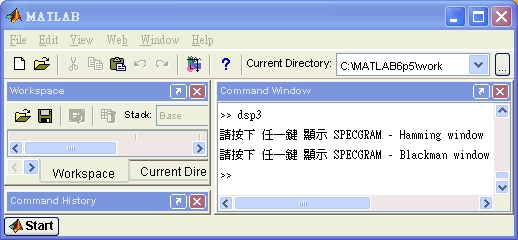
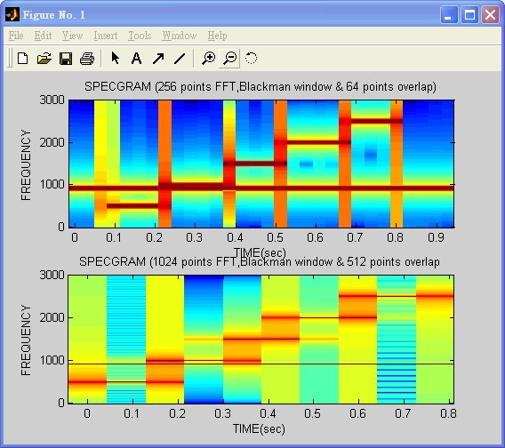

Window Size and the Spectrogram
生成以下兩筆訊號, 兩筆訊號混合後, 觀察其在頻域之性質。
- S1 (t) = COS(2π f1 t), f1=900
- S2(t) = COS(2π f2 t),
- f2= 500, t = 0.1s~0.24s
- f2= 1000, t = 0.24s~0.4s
- f2= 1500, t = 0.4s~0.54s
- f2= 2000, t = 0.54s~0.7s
- f2= 2500, t = 0.7s~0.83s
Requirements
- Matlab 6.5
Programming
% .............................................................................
% Filename : dsp3.m
% Author : Ching-Wen,Lai
% Running : running this .m file in Matlab
% Description : Window Size and the Spectrogram
% Date : 01/04 2003 ver1.0
% Comment : Matlab Scripts : Getting SPECGRAM
% SPECGRAM(A, NFFT, Fs, WINDOW, NOVERLAP)
% Reference : DSP First
% Path : DSP First - Text Book\CHAPTERS\9SPECTA\DEMOS\SPECGRAM\INDEX.HTM
% .............................................................................
close all;
clear all;
fs = 6000;
n = 1; f0 = 920; f1 = 500; f2 = 1000; f3 = 1500; f4 = 2000; f5 = 2500;
% ....................... Generating the Signal ...............................
for t=0:1/fs:1
if 0.1 < t & t < 0.24
s(n) = cos(2 * pi * f0 * t) + cos(2 * pi * f1 * t);
elseif 0.24 < t & t < 0.4
s(n) = cos(2 * pi * f0 * t) + cos(2 * pi * f2 *t);
elseif 0.4 < t & t < 0.54
s(n) = cos(2 * pi * f0 * t) + cos(2 * pi * f3 * t);
elseif 0.54 < t & t < 0.7
s(n) = cos(2 * pi * f0 * t) + cos(2 * pi * f4 * t);
elseif 0.7 < t & t < 0.83
s(n) = cos(2 * pi * f0 * t) + cos(2 * pi * f5 * t);
else
s(n) = cos(2 * pi * f0 * t);
end
n = n + 1;
end
% ............................... Display Signal .............................
t = 0:1/fs:1; plot(t,s);
ylabel('AMPLITUDE'); xlabel('TIME(sec)'); title('S(n) waveform');
% ................ Display Specgram using Hamming windows .....................
k=input('請按下 任一鍵 顯示 SPECGRAM - Hamming window');
subplot(211); specgram(s, 256, fs, hamming(256),64);
ylabel('FREQUENCY'); xlabel('TIME(sec)');
title('SPECGRAM (256 points FFT, Hamming window & 64 points overlap)');
subplot(212); specgram(s, 1024, fs, hamming(1024),512);
ylabel('FREQUENCY'); xlabel('TIME(sec)');
title('SPECGRAM of o/p (1024 points FFT, Hamming window & 512 points overlap');
% ............. Display Specgram using Blackman windows .......................
k=input('請按下 任一鍵 顯示 SPECGRAM - Blackman window');
subplot(211); specgram(s, 256, fs, blackman(256), 64);
ylabel('FREQUENCY'); xlabel('TIME(sec)');
title('SPECGRAM (256 points FFT, Blackman window & 64 points overlap)');
subplot(212); specgram(s, 1024, fs, blackman(1024), 512);
ylabel('FREQUENCY'); xlabel('TIME(sec)');
title('SPECGRAM (1024 points FFT, Blackman window & 512 points overlap');
Running
Screenshot

Step-by-Step
| Step | Prompt | Description |
|---|---|---|
| 1 | >> dsp3 | |
| 2 | 請按下 任一鍵 顯示 SPECGRAM - Hamming Window | Please Press any key to display SPECGRAM - Hamming Window |
| 3 | 請按下 任一鍵 顯示 SPECGRAM - Blackman Window | Please Press any key to display SPECGRAM - Blackman Window |
| 4 | >> |
Result
-
Input Data

-
Hamming window

- 上圖犧牲 Frequency 上的解析度, 但增加時間軸上的解析度。
-
下圖 Frequency 上的解析度較細, 但犧牲了 時間軸上的解析度，不知訊號在何時改變。端看所需之目地來選擇要使用的處理模式。
-
Blackman window
 - 上圖犧牲 Frequency 上的解析度, 但增加時間軸上的解析度。
- 下圖 Frequency 上的解析度較細, 但犧牲了 時間軸上的解析度，不知訊號在何時改變。端看所需之目地來選擇要使用的處理模式。
Analysis
| Original | Hamming Window | Blackman Window |
|---|---|---|
|
|
Conclusion
- 觀察得知
- Hamming Window 的能量較 Blackman window 集中. Overlap 讓相鄰的 框(FRAME)看起來較為平順(smooth).
Advanced
- n/a
Comment
- 如果 Matlab 6.0 無法被安裝在 Intel Pentium 4 (含 Intel Celeron 1.8G 以上 ), 可以嘗試安裝 Matlab 6.5 以上.
Reference
- Discrete-Time Signal Processing
- Author: Alan V. Oppenheim,Ronald W.Schafer and John R.Buck,
- Publisher: Prentice Hall
- ISBN: 0-13-0834443-2
- sample code in cdrom:
Text Book\CHAPTERS\9SPECTA\DEMOS\SPECGRAM\INDEX.HTM
$author: Jing-Wen (Ed) Lai
$initial: Dec. 2002
$revised: Mar. 2018
$keywords: dsp, digital, signal, processing, spectrogram, matlab, windows, overlap